SFI SYSTEM > TERMINALS OF ECM |
| CHECK ECM |
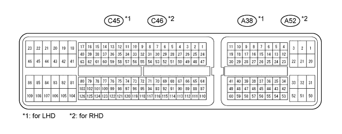
Measure the voltage according to the value(s) in the table below.
| Terminal No. (Symbol) | Wiring Color | Terminal Description | Condition | Specified Condition |
| A38-1 (BATT) - C45-81 (E1)*1 A52-1 (BATT) - C46-81 (E1)*2 | L - BR | Battery (for measuring battery voltage and for ECM memory) | Always | 11 to 14 V |
| C45-41 (+BM) - C45-81 (E1)*1 C46-41 (+BM) - C46-81 (E1)*2 | P - BR | Power source of throttle actuator | Always | 11 to 14 V |
| A38-28 (IGSW) - C45-81 (E1)*1 A52-28 (IGSW) - C46-81 (E1)*2 | B - BR | Engine switch | Engine switch on (IG) | 11 to 14 V |
| A38-3 (+B) - C45-81 (E1)*1 A52-3 (+B) - C46-81 (E1)*2 | B - BR | Power source of ECM | Engine switch on (IG) | 11 to 14 V |
| A38-2 (+B2) - C45-81 (E1)*1 A52-2 (+B2) - C46-81 (E1)*2 | B - BR | Power source of ECM | Engine switch on (IG) | 11 to 14 V |
| C45-58 (OC1+) - C45-57 (OC1-)*1 C46-58 (OC1+) - C46-57 (OC1-)*2 | B - B-L | Cam Timing oil control valve (OCV) (for Bank 1) | Engine switch on (IG) | Pulse generation (see waveform 1) |
| C45-52 (OC2+) - C45-51 (OC2-)*1 C46-52 (OC2+) - C46-51 (OC2-)*2 | L-B - R-B | Cam Timing oil control valve (OCV) (for Bank 2) | Engine switch on (IG) | Pulse generation (see waveform 1) |
| A38-34 (MREL) - C45-81 (E1)*1 A52-34 (MREL) - C46-81 (E1)*2 | L - BR | EFI relay | Engine switch on (IG) | 11 to 14 V |
| C45-74 (VG) - C45-75 (E2G)*1 C46-74 (VG) - C46-75 (E2G)*2 | L-Y - G-W | Mass air flow meter | Idling, shift lever in P or N, A/C switch off | 0.5 to 3.0 V |
| C45-73 (THA) - C45-97 (ETHW)*1 C46-73 (THA) - C46-97 (ETHW)*2 | Y-B - BR | Intake air temperature sensor | Idling, intake air temperature 20°C (68°F) | 0.5 to 3.4 V |
| C45-76 (THW) - C45-97 (ETHW)*1 C46-76 (THW) - C46-97 (ETHW)*2 | G-B - BR | Engine coolant temperature sensor | Idling, engine coolant temperature 80°C (176°F) | 0.2 to 1.0 V |
| C45-80 (VCTA) - C45-79 (ETA)*1 C46-80 (VCTA) - C46-79 (ETA)*2 | L - Y | Power source of throttle position sensor (specific voltage) | Engine switch on (IG) | 4.5 to 5.5 V |
| C45-78 (VTA1) - C45-79 (ETA)*1 C46-78 (VTA1) - C46-79 (ETA)*2 | R-Y - Y | Throttle position sensor (for engine control) | Engine switch on (IG), throttle valve fully closed | 0.5 to 1.2 V |
| Engine switch on (IG), throttle valve fully open | 3.2 to 4.8 V | |||
| C45-77 (VTA2) - C45-79 (ETA)*1 C46-77 (VTA2) - C46-79 (ETA)*2 | Y-B - Y | Throttle position sensor (for sensor malfunction detection) | Engine switch on (IG), throttle valve fully closed | 2.1 to 3.1 V |
| Engine switch on (IG), throttle valve fully open | 4.5 to 5.5 V | |||
| A38-55 (VPA) - A38-58 (EPA)*1 A52-55 (VPA) - A52-58 (EPA)*2 | R - W-L | Accelerator pedal position sensor (for engine control) | Engine switch on (IG), accelerator pedal released | 0.5 to 1.1 V |
| Engine switch on (IG), accelerator pedal fully depressed | 2.6 to 4.5 V | |||
| A38-56 (VPA2) - A38-60 (EPA2)*1 A52-56 (VPA2) - A52-60 (EPA2)*2 | GR-G - BR | Accelerator pedal position sensor (for sensor malfunctioning detection) | Engine switch on (IG), accelerator pedal released | 1.2 to 2.0 V |
| Engine switch on (IG), accelerator pedal fully depressed | 3.4 to 5.3 V | |||
| A38-57 (VCPA) - A38-58 (EPA)*1 A52-57 (VCPA) - A52-58 (EPA)*2 | L-W - W-L | Power source of accelerator pedal position sensor (for VPA) | Engine switch on (IG) | 4.5 to 5.5 V |
| A38-59 (VCP2) - A38-60 (EPA2)*1 A52-59 (VCP2) - A52-60 (EPA2)*2 | V - BR | Power source of accelerator pedal position sensor (for VPA2) | Engine switch on (IG) | 4.5 to 5.5 V |
| C45-22 (HA1A) - C45-23 (E04)*1 C46-22 (HA1A) - C46-23 (E04)*2 | L - W-B | A/F sensor heater | Idling | Below 3.0 V |
| Engine switch on (IG) | 11 to 14 V | |||
| C45-20 (HA2A) - C45-21 (E05)*1 C46-20 (HA2A) - C46-21 (E05)*2 | G - W-B | A/F sensor heater | Idling | Below 3.0 V |
| Engine switch on (IG) | 11 to 14 V | |||
| C45-126 (A1A+) - C45-81 (E1)*1 C46-126 (A1A+) - C46-81 (E1)*2 | G -BR | A/F sensor | Engine switch on (IG) | 3.3 V |
| C45-125 (A1A-) - C45-81 (E1)*1 C46-125 (A1A-) - C46-81 (E1)*2 | R - BR | A/F sensor | Engine switch on (IG) | 2.9 V |
| C45-103 (A2A+) - C45-81 (E1)*1 C46-103 (A2A+) - C46-81 (E1)*2 | P - BR | A/F sensor | Engine switch on (IG) | 3.3 V |
| C45-102 (A2A-) - C45-81 (E1)*1 C46-102 (A2A-) - C46-81 (E1)*2 | L - BR | A/F sensor | Engine switch on (IG) | 2.9 V |
| C45-45 (HT1B) - C45-46 (E03)*1 C46-45 (HT1B) - C46-46 (E03)*2 | G-B - W-B | Heated oxygen sensor heater | Idling | Below 3.0 V |
| Engine switch on (IG) | 11 to 14 V | |||
| C45-44 (HT2B) - C45-46 (E03)*1 C46-44 (HT2B) - C46-46 (E03)*2 | B - W-B | Heated oxygen sensor heater | Idling | Below 3.0 V |
| Engine switch on (IG) | 11 to 14 V | |||
| C45-114 (OX1B) - C45-115 (EX1B)*1 C46-114 (OX1B) - C46-115 (EX1B)*2 | W - BR | Heated oxygen sensor | Engine speed maintained at 2500 rpm for 2 minutes after warming up sensor | Pulse generation (see waveform 2) |
| C45-112 (OX2B) - C45-113 (EX2B)*1 C46-112 (OX2B) - C46-113 (EX2B)*2 | B - BR | |||
| C45-86 (#10) - C45-43 (E01)*1 C46-86 (#10) - C46-43 (E01)*2 | R-L - W-B | Fuel Injector | Engine switch on (IG) | 11 to 14 V |
| C45-109 (#20) - C45-43 (E01)*1 C46-109 (#20) - C46-43 (E01)*2 | L - W-B | |||
| C45-85 (#30) - C45-43 (E01)*1 C46-85 (#30) - C46-43 (E01)*2 | R - W-B | |||
| C45-108 (#40) - C45-43 (E01)*1 C46-108 (#40) - C46-43 (E01)*2 | Y - W-B | |||
| C45-84 (#50) - C45-43 (E01)*1 C46-84 (#50) - C46-43 (E01)*2 | G - W-B | Idling | Pulse generation (see waveform 3) | |
| C45-107 (#60) - C45-43 (E01)*1 C46-107 (#60) - C46-43 (E01)*2 | R - W-B | |||
| C45-83 (#70) - C45-43 (E01)*1 C46-83 (#70) - C46-43 (E01)*2 | W - W-B | |||
| C45-106 (#80) - C45-43 (E01)*1 C46-106 (#80) - C46-43 (E01)*2 | R-B - W-B | |||
| C45-94 (KNK1) - C45-93 (EKNK)*1 C46-94 (KNK1) - C46-93 (EKNK)*2 | G - R | Knock sensor | Engine speed maintained at 4000 rpm after warming up engine | Pulse generation (see waveform 4) |
| C45-117 (KNK2) - C45-116 (EKN2)*1 C46-117 (KNK2) - C46-116 (EKN2)*2 | W - B | |||
| C45-92 (VV1+) - C45-91 (VV1-)*1 C46-92 (VV1+) - C46-91 (VV1-)*2 | R - G | Variable valve timing (VVT) sensor (for intake side of bank 1) | Idling | Pulse generation (see waveform 5) |
| C45-87 (VV2+) - C45-88 (VV2-)*1 C46-87 (VV2+) - C46-88 (VV2-)*2 | R - W | Variable valve timing (VVT) sensor (for intake side of bank 2) | Idling | Pulse generation (see waveform 5) |
| C45-110 (NE+) - C45-111 (NE-)*1 C46-110 (NE+) - C46-111 (NE-)*2 | L - G | Crank position sensor | Idling | Pulse generation (see waveform 5) |
| C45-40 (IGT1) - C45-81 (E1)*1 C46-40 (IGT1) - C46-81 (E1)*2 | B-Y - BR | Ignition coil (ignition signal) | Idling | Pulse generation (see waveform 6) |
| C45-33 (IGT2) - C45-81 (E1)*1 C46-33 (IGT2) - C46-81 (E1)*2 | L-Y - BR | |||
| C45-37 (IGT3) - C45-81 (E1)*1 C46-37 (IGT3) - C46-81 (E1)*2 | B - BR | |||
| C45-38 (IGT4) - C45-81 (E1)*1 C46-38 (IGT4) - C46-81 (E1)*2 | L-B - BR | |||
| C45-35 (IGT5) - C45-81 (E1)*1 C46-35 (IGT5) - C46-81 (E1)*2 | G-R - BR | |||
| C45-36 (IGT6) - C45-81 (E1)*1 C46-36 (IGT6) - C46-81 (E1)*2 | G - BR | |||
| C45-34 (IGT7) - C45-81 (E1)*1 C46-34 (IGT7) - C46-81 (E1)*2 | G-W - BR | |||
| C45-39 (IGT8) - C45-81 (E1)*1 C46-39 (IGT8) - C46-81 (E1)*2 | G-B - BR | |||
| C45-104 (IGF1) - C45-81 (E1)*1 C46-104 (IGF1) - C46-81 (E1)*2 | G-B - BR | Ignition coil (ignition confirmation signal) | Engine switch on (IG) | 4.5 to 5.5 V |
| Idling | Pulse generation (see waveform 6) | |||
| C45-105 (IGF2) - C45-81 (E1)*1 C46-105 (IGF2) - C46-81 (E1)*2 | R - BR | Ignition coil (ignition confirmation signal) | Engine switch on (IG) | 4.5 to 5.5 V |
| Idling | Pulse generation (see waveform 6) | |||
| C45-63 (PRG) - C45-81 (E1)*1 C46-63 (PRG) - C46-81 (E1)*2 | L-B - BR | Purge VSV | Engine switch on (IG) | 11 to 14 V |
| Idling | Pulse generation (see waveform 7) | |||
| A38-13 (SPD) - C45-81 (E1)*1 A52-13 (SPD) - C46-81 (E1)*2 | V-R - BR | Speed signal from combination meter | Driving at 20 km/h (12 mph) | Pulse generation (see waveform 8) |
| A38-46 (STA) - C45-81 (E1)*1 A52-46 (STA) - C46-81 (E1)*2 | R-B - BR | Starter signal | Cranking | 5.5 V or higher |
| C45-120 (NSW) - C45-81 (E1)*1 C46-120 (NSW) - C46-81 (E1)*2 | L - BR | Park/neutral position switch | Engine switch on (IG), shift lever not in P or N | 11 to 14 V |
| Engine switch on (IG), shift lever in P or N | Below 3.0 V | |||
| A38-36 (STP) - C45-81 (E1)*1 A52-36 (STP) - C46-81 (E1)*2 | R - BR | Stop light switch | Brake pedal depressed | 7.5 to 14 V |
| Brake pedal released | Below 1.5 V | |||
| A38-35 (ST1-) - C45-81 (E1)*1 A52-35 (ST1-) - C46-81 (E1)*2 | R-W - BR | Stop light switch (opposite to STP terminal) | Engine switch on (IG), brake pedal depressed | Below 1.5 V |
| Engine switch on (IG), brake pedal released | 7.5 to 14 V | |||
| C45-19 (M+) - C45-82 (ME01)*1 C46-19 (M+) - C46-82 (ME01)*2 | R - W-B | Throttle actuator | Idling with warm engine | Pulse generation (see waveform 9) |
| C45-18 (M-) - C45-82 (ME01)*1 C46-18 (M-) - C46-82 (ME01)*2 | G - W-B | Throttle actuator | Idling with warm engine | Pulse generation (see waveform 10) |
| A38-48 (FC) - C45-81 (E1)*1 A52-48 (FC) - C46-81 (E1)*2 | L-R - BR | Fuel pump control | Engine switch on (IG) | 11 to 14 V |
| A38-52 (FPC) - C45-81 (E1)*1 A52-52 (FPC) - C46-81 (E1)*2 | W - BR | Fuel pump control | Engine switch on (IG) | Below 1.5 V |
| A38-24 (W) - C45-81 (E1)*1 A52-24 (W) - C46-81 (E1)*2 | R-Y - BR | MIL | Engine switch on (IG) | Below 3.0 V |
| Idling | 11 to 14 V | |||
| A38-16 (TC) - C45-81 (E1)*1 A52-16 (TC) - C46-81 (E1)*2 | V-W - BR | Terminal TC of DLC3 | Engine switch on (IG) | 11 to 14 V |
| A38-15 (TACH) - C45-81 (E1)*1 A52-15 (TACH) - C46-81 (E1)*2 | W-G - BR | Engine speed | Idling | Pulse generation (see waveform 11) |
| C45-66 (VC) - C45-97 (ETHW)*1 C46-66 (VC) - C46-97 (ETHW)*2 | L - BR | Power source for sensor (specific voltage) | Engine switch on (IG) | 4.5 to 5.5 V |
| C45-32 (ALT) - C45-81 (E1)*1 C46-32 (ALT) - C46-81 (E1)*2 | R - BR | Generator | Engine switch on (IG) | 11 to 14 V |
| A38-10 (CANH) - C45-81 (E1)*1 A52-10 (CANH) - C46-81 (E1)*2 | P - BR | CAN communication line | Engine switch on (IG) | Pulse generation (see waveform 12) |
| A38-11 (CANL) - C45-81 (E1)*1 A52-11 (CANL) - C46-81 (E1)*2 | B - BR | CAN communication line | Engine switch on (IG) | Pulse generation (see waveform 13) |
| C45-62 (ACIS) - C45-81 (E1)*1 C46-62 (ACIS) - C46-81 (E1)*2 | R-W - BR | VSV for ACIS (Acoustic Control Induction System) operation signal | Engine switch on (IG) | 11 to 14 V |
| C45-28 (AIRV) - C45-81 (E1)*1 C46-28 (AIRV) - C46-81 (E1)*2 | BR - BR | Air switching valve for secondary air injection system | Engine switch on (IG) | 11 to 14 V |
| C45-54 (AIRP) - C45-81 (E1)*1 C46-54 (AIRP) - C46-81 (E1)*2 | P - BR | Air pump control | Engine switch on (IG) | 11 to 14 V |
| C45-30 (AIDI) - C45-81 (E1)*1 C46-30 (AIDI) - C46-81 (E1)*2 | G - BR | Diagnostic information signal for air injection system | Air injection system operates | Pulse generation (see waveform 15) |
| A38-54 (AIP) - C45-98 (ETHA)*1 A52-54 (AIP) - C46-98 (ETHA)*2 | P-L - BR | Secondary air injection system pressure signal | Engine switch on (IG) | 3.0 to 3.6 V |
| C45-90 (G2) - C45- 89 (G2-)*1 C46-90 (G2) - C46- 89 (G2-)*2 | R - G | Cam position sensor | Idling | Pulse generation (see waveform 14) |
| A38-18 (DI) - C45-81 (E1)*1 A52-18 (DI) - C46-81 (E1)*2 | G-Y - BR | Fuel pump control | Engine switch on (IG) | 0 to 3.0 V |
| A38-14 (STSW) - C45-81 (E1)*1 A52-14 (STSW) - C46-81 (E1)*2 | R - BR | Starter switch | Shift lever in P or N, cranking | 6.0 V or higher |
| A38-41 (ACCR) - C45-81 (E1)*1 A52-41 (ACCR) - C46-81 (E1)*2 | L-Y - BR | ACC relay control signal | Engine switch on (IG) → Cranking | 11 to 14 V → Below 1 V |
| C45-16 (STAR) - C45-81 (E1)*1 C46-16 (STAR) - C46-81 (E1)*2 | L - BR | Starter relay control | Engine switch on (IG) | Below 1.5 V |
| Cranking | 5.5 V or higher | |||
| C45-72 (PSP) - C45-81 (E1)*1 C46-72 (PSP) - C46-81 (E1)*2 | G - BR | Power steering oil pressure sensor | Engine switch on (IG) | 0.5 to 4.5 V |
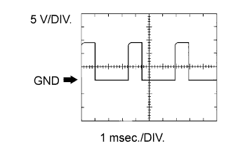 |
WAVEFORM 1:
| Item | Content |
| Terminal No. (Symbol) | Between OC1+ and OC1- Between OC2+ and OC2- |
| Tool Setting | 5 V/DIV., 1 msec./DIV. |
| Condition | Idling |
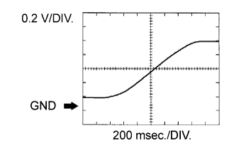 |
WAVEFORM 2:
| Item | Content |
| Terminal No. (Symbol) | Between OX1B and EX1B Between OX2B and EX2B |
| Tool Setting | 0.2 V/DIV., 200 msec./DIV. |
| Condition | Engine speed maintained at 2500 rpm for 2 minutes after warming up sensor |
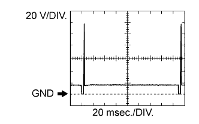 |
WAVEFORM 3:
| Item | Content |
| Terminal No. (Symbol) | Between #10 (to #80) and E01 |
| Tool Setting | 20 V/DIV., 20 msec./DIV. |
| Condition | Idling |
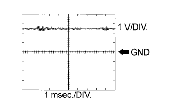 |
WAVEFORM 4:
| Item | Content |
| Terminal No. (Symbol) | Between KNK1 and EKNK Between KNK2 and EKN2 |
| Tool Setting | 1 V/DIV., 1 msec./DIV. |
| Condition | Engine speed maintained at 4000 rpm after warming up engine |
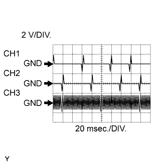 |
WAVEFORM 5:
| Item | Content |
| Terminal No. (Symbol) | CH1: Between VV1+ and VV1- CH2: Between VV2+ and VV2- CH3: Between NE+ and NE- |
| Tool Setting | 2 V/DIV., 20 msec./DIV. |
| Condition | Idling after engine warmed up |
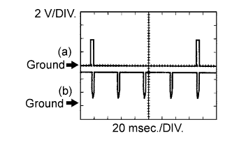 |
WAVEFORM 6:
| Item | Content |
| Terminal No. (Symbol) | (a) Between IGT1 (to IGT8) and E1 (b) Between IGF1 (IGF2) and E1 |
| Tool Setting | 2 V/DIV., 20 msec./DIV. |
| Condition | Idling |
 |
WAVEFORM 7:
| Item | Content |
| Terminal No. (Symbol) | Between PRG and E1 |
| Tool Setting | 10 V/DIV., 10 to 100 msec./DIV. |
| Condition | Idling |
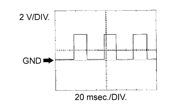 |
WAVEFORM 8:
| Item | Content |
| Terminal No. (Symbol) | Between SPD and E1 |
| Tool Setting | 2 V/DIV., 20 msec./DIV. |
| Condition | Driving at 20 km/h (12 mph) |
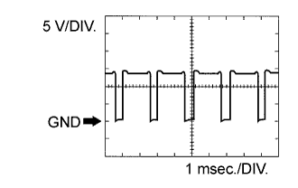 |
WAVEFORM 9:
| Item | Content |
| Terminal No. (Symbol) | Between M+ and ME01 |
| Tool Setting | 5 V/DIV., 1 msec./DIV. |
| Condition | Idling with warm engine |
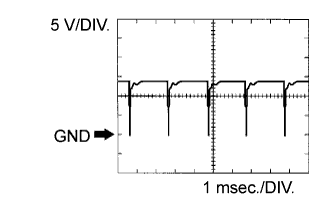 |
WAVEFORM 10:
| Item | Content |
| Terminal No. (Symbol) | Between M- and ME01 |
| Tool Setting | 5 V/DIV., 1 msec./DIV. |
| Condition | Idling with warm engine |
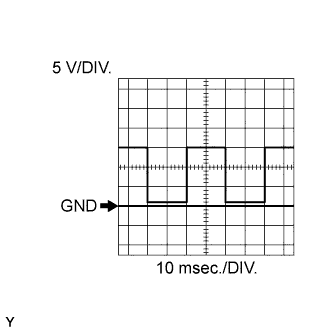 |
WAVEFORM 11:
| Item | Content |
| Terminal No. (Symbol) | Between TACH and E1 |
| Tool Setting | 5 V/DIV., 10 msec./DIV. |
| Condition | Idling |
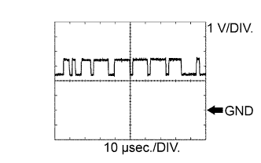 |
WAVEFORM 12:
| Item | Content |
| Terminal No. (Symbol) | Between CANH and E1 |
| Tool Setting | 1 V/DIV., 10 μsec./DIV. |
| Condition | Engine stopped and engine switch on (IG) |
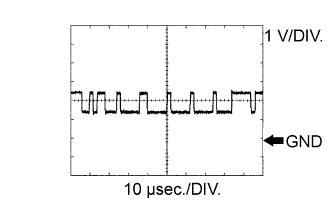 |
WAVEFORM 13:
| Item | Content |
| Terminal No. (Symbol) | Between CANL and E1 |
| Tool Setting | 1 V/DIV., 10 μsec./DIV. |
| Condition | Engine stopped and engine switch on (IG) |
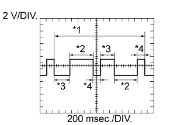 |
WAVEFORM 14:
| Item | Content |
| Terminal No. (Symbol) | Between G2 and G2- |
| Tool Setting | 2 V/DIV., 200 msec./DIV. |
| Condition | Idling after engine warmed up |
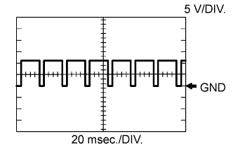 |
WAVEFORM 15:
| Item | Content |
| Terminal No. (Symbol) | Between AIDI and E1 |
| Tool Setting | 5 V/DIV., 20 to 40 msec./DIV. |
| Condition | Performing system check using intelligent tester (air injection check) |